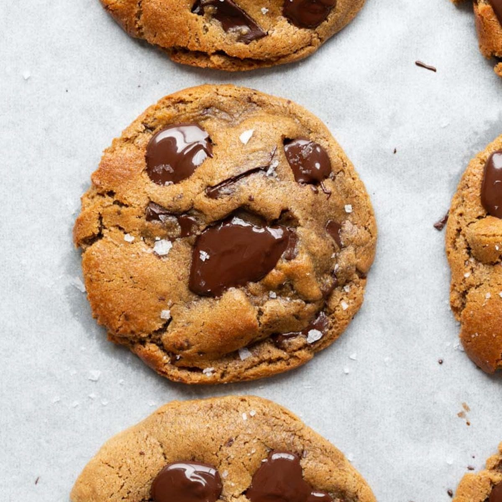

Chocolate Chip Cookies

Soft and chewy with plenty of chocolate chips, the cookies are so good that they
will not last a day before being devoured. Makes 2 dozen cookies
This is a recipe that started from the back of a Toll House chocolate chip bag,
but over the years I have tweaked this recipe to be something entirely my own. This
recipe uses two different types of flour to get the chew feel just right, it also includes
coffee that elevates the chocolate flavors to another level.
Ingredients
- 1 and 1/2 cups all purpose flour
- 1/2 cup bread flour
- 1 tbsp baking soda
- 1 tbsp kosher salt
- 1 tsp cinnamon
- 1 cup dark brown sugar
- 3/4 cup sugar
- 2 sticks butter (soften)
- 2 eggs and 1 egg yoke
- 1 tbsp instant coffee
- 2 cups semi-sweet chocolate chips
- Pre-heat oven to 350 degrees
- In a bowl, combine both kinds of flour, baking soda, salt, and cinnamon.
- Using a stand mixer or hand mixer, beat together butter, brown sugar, and sugar until light and fluffy
- Add the instant coffee to bowl with the 2 eggs and egg yoke make sure the instant coffee is fully dissolved into the eggs
- One at a time using the stand or hand mixer mix the eggs into the butter and sugar mixture, mix until fully combined
- In half cup increments add the flour mixture to the mixer bowl, do not over mix the flour
- After all the flour is added, mix in the chocolate chips using a spatula
- On a parchment covered or lightly greased baking sheet, divide the dough into 2 tbsp balls and place about 2 inch apart
- Bake cookies for 12 to 14 minutes or until the ends are slightly browned and crisply, but the center is still gooey
- Transfer the done cookies to a cooling rack for around 10 minutes
- Cookies are now done, dig in and enjoy the best cookies of your life!